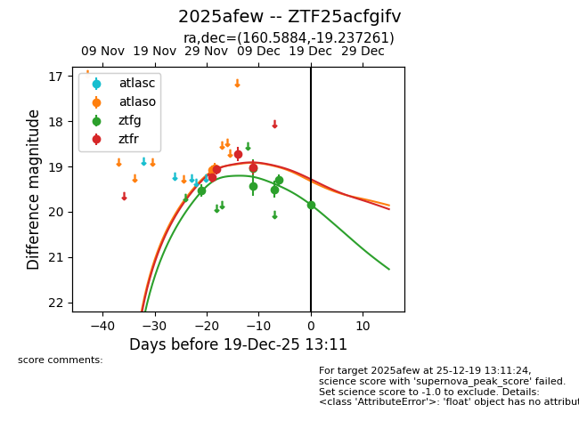
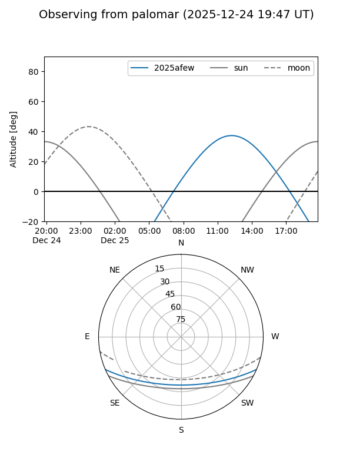

2025afew
Target 2025afew at 2025-12-19 13:12
Aliases and brokers:
FINK: fink-portal.org/ZTF25acfgifv
Lasair: lasair-ztf.lsst.ac.uk/objects/ZTF25acfgifv
ALeRCE: alerce.online/object/ZTF25acfgifv
TNS: wis-tns.org/object/2025afew
YSE: ziggy.ucolick.org/yse/transient_detail/2025afew
alt names
ZTF25acfgifv (ztf,fink_ztf)
2025afew (tns,yse)
Coordinates:
equatorial (ra, dec) = 160.5884,-19.23726
equatorial (HMS+DMS) = 10:42:21.21,-19:14:14.14
galactic (l, b) = (265.4438,+34.07351)
Flags:
Photometry:
last atlaso=19.03, ztfg=19.85, ztfr=19.02
2 atlaso, 6 ztfg, 4 ztfr detections
Lightcurve

Visibility


Additional plots